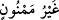
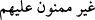
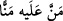
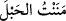
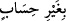
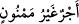

nedenle başa kakmanın yol açtığı bir kedere uğramayacakları “bir mükâfât vardır.”
“(__WORD__) başa kakılmayan” ifâdesi, hazf ü îsâl kuralı gereğince -yani (__WORD__) harfi
hazfedilip mânâsı ibârede düşünülerek- “(__WORD__) başlarına asla kakılmayan”
anlamındadır.
(__WORD__) demek “nimetlendirdi” anlamına gelir; (__WORD__) masdarından geldiği takdirde
ise, “başa kaktı” demek olur. Minnet aslında, veren kişinin verdiği şeye karşılık verdiği
kimseden bir şey talep etmediği önemli bir nimet demek iken, sonraları zamanla
“imtinân” yani “verdiklerini hatırlatıp durmak başa kakmak” mânâsında kullanılır
olmuştur.
Cenâb-ı Hakk’ın âhirette vereceği bütün nimetler O’nun sırf fazl ü keremindendir.
Ehl-i sünnete göre O (c.c.) esasen hiçbirini vermek zorunda değildir. Fazl ve kerem
îcâbı verilen bir şey, başa kakılabilir ise de Allah Teâlâ yine fazl ü kereminden dolayı
bunu da yapmayacaktır.
(__WORD__) “başa kakılmayan” ifâdesi, “âhirette ecir ve sevapları bitip tükenmek
bilmez, aksine sürekli ve ebedîdir” anlamında da olabilir ki bu da “ipi kestim”
anlamına gelen (__WORD__) ifâdesinden gelir. Ya da “hesap edilmez” demektir ki “(__WORD__) hesapsız kitapsız” âyetleri de bu mânâdadır. Kàmus’ta der ki: “(__WORD__)
demek, hesap edilmeyen ya da bitip tükenmeyen ecir ve mükâfât demektir.” der.
Âyette, îman ettiği halde sâlih amellerde bulunmayanlara “memnûn; sona eren,
hesaplı-kitaplı” yani eksik mükâfat verileceğine işaret edilmektedir Îmânının mükâfatı;
ecir eksikliği ise, sâlih ameli terketmesindendir. Böyle biri cehenneme girecek ama
îmânına verilen ecir sayesinde oradan çıkıp cennete girecektir. Ancak böyle bir kimse
namaz, zekât, oruç, hac vb. bedenî ibadetlere bağlanmış bulunan yüksek derecelere
ulaşamayacaktır.
Keşfü’l-esrâr’da Süddî (r.h.) der ki: “Bu âyet hastalar, kötürüm olmuş kimseler ve
zayıf yaşlılar hakkında inmiştir. Bu kimseler; hastalık, zayıflık ve âcizlik sebebiyle
Allah’a ibâdet etmekten ve tâatten geri kalırlar, Hakk’a karşı görevlerini yerine
getiremezler. Bu sebeple rahatsız olup kederlenirler. Âlemlerin Rabbi bu hastalık
sebebiyle onlara, sağlıklı zamanlarında yaptıkları ibâdet ve tâatte olduğu gibi sevap
yazar.
Mustafa (s.a.) şöyle buyurur: “Bir kul güzel bir tarîkat gidişât üzere bulunurken
hasta olursa, kendisiyle ilgili görevlendirilmiş meleğe denir ki: Buna, kendisini eski
sağlığına kavuşturuncaya ya da kendi nezdime alıncaya kadar serbest ve sağlıklı
zamanlarındaki gibi sevap yazmaya devam ediniz.”[4] Bu hadisin anlamı şudur:
‘Sağlıklı olduğu dönemdeki tâat ve ibadetini kabul ettiğim gibi ya da kendi huzûrumuzda
kabul ettiğimiz şekilde ona ecrini şimdi de vereceğim. Yani o hasta kul benim
yanımdadır, bana bağlıdır.
Bir başka rivâyete göre ise Hz. Peygamber (s.a.) şöyle buyurmuştur: “Allah’a
teslimiyet gösteren hiçbir kul yoktur ki bedenine herhangi bir belâ isâbet etsin de